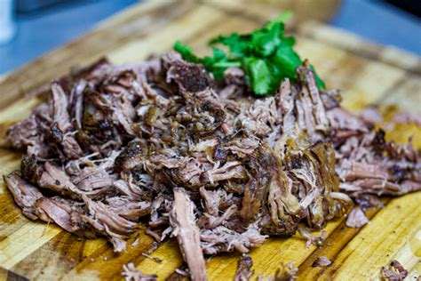

Shredded beef shoulder

Description
Shredded beef shoulder is one of the easies recipes you can make sous vide;
It is super fast to make and takes little to no effort at all!
It is an interesting dish because it can turn a cheap cut of meat into a prime quality dish
Ingredients
- Beef shoulder cut
- Salt
- Black pepper
- Seasoning of your taste
Steps
- Clean extra fat from the beef shoulder, if any
- Season it with your spices of choice
- Vacuum seal it
- Cook at 74°c for 24 hours
- Open the bag and shred it
Probably relevant, i really didn't check it
Back to Main page